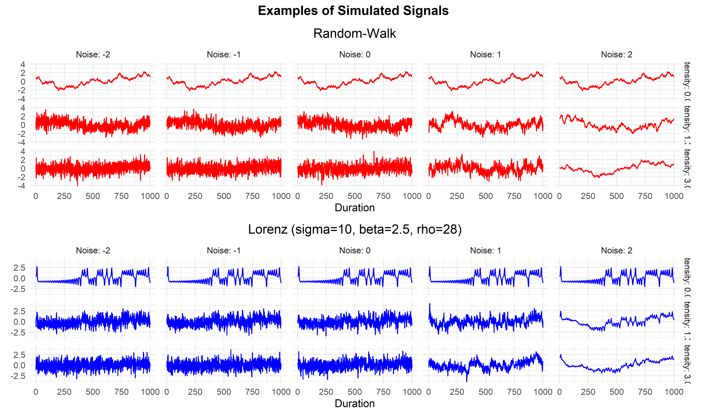
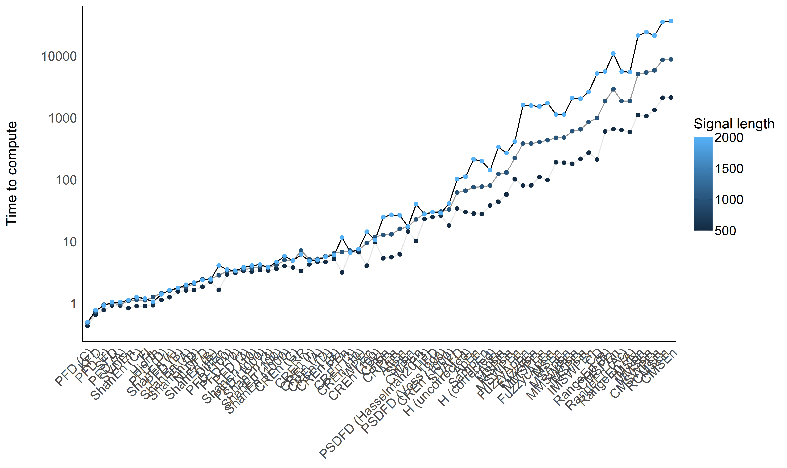
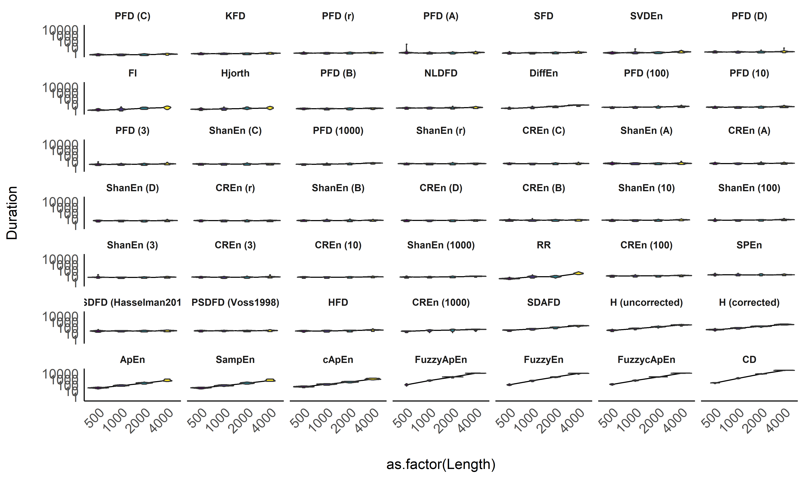
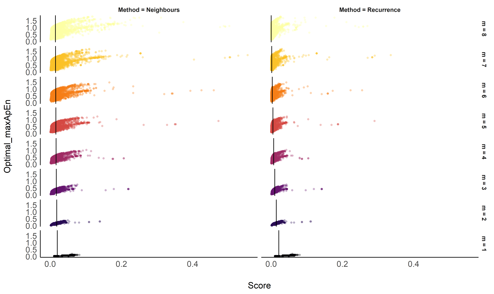
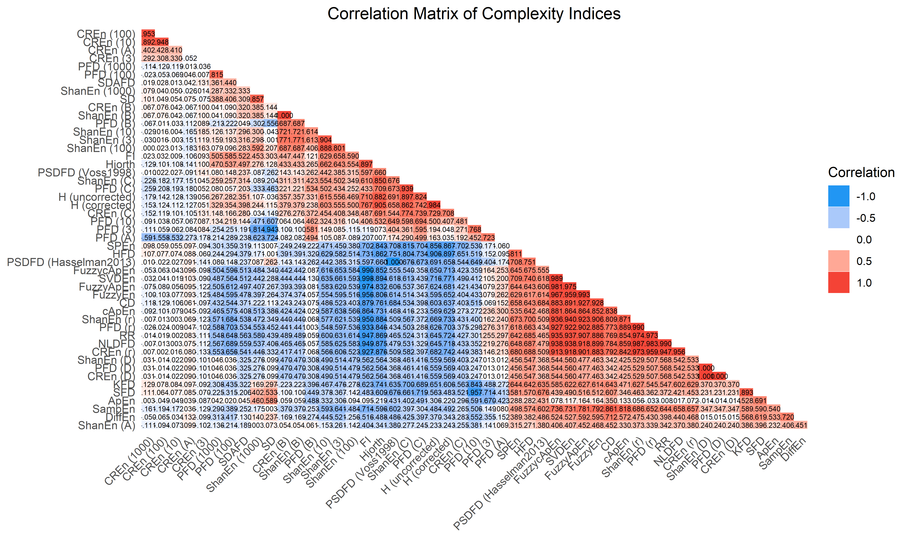
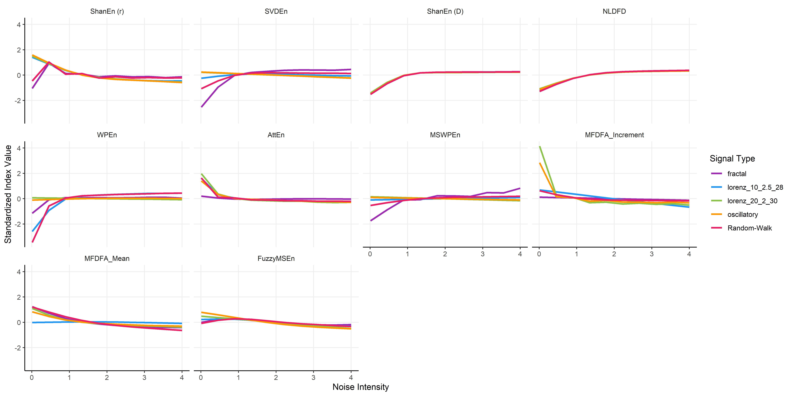
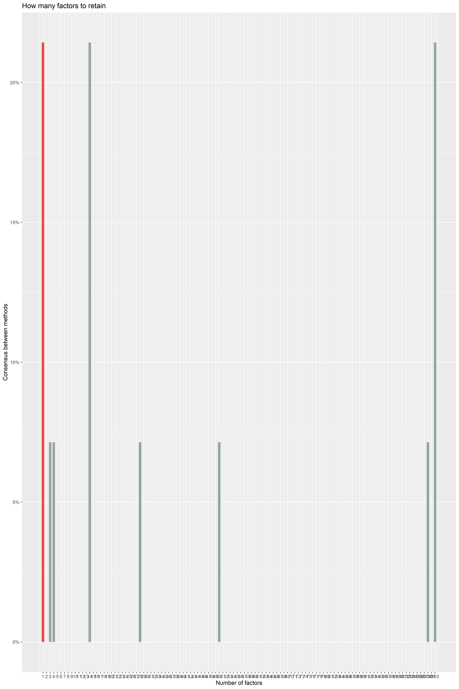
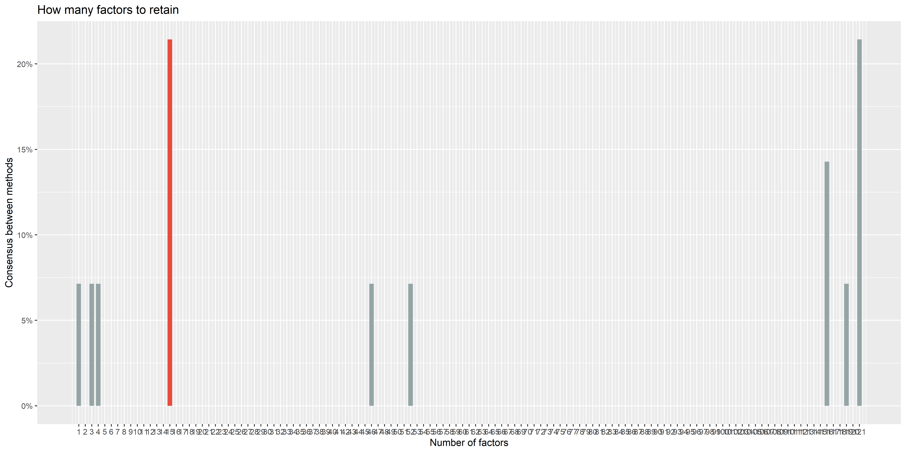
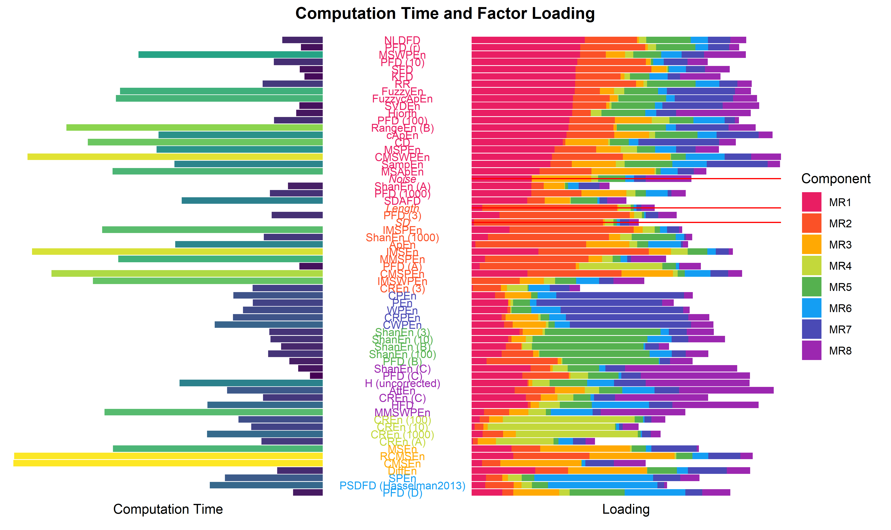

Measuring Chaos: Empirical Relationship between Complexity Indices
Contents
Measuring Chaos: Empirical Relationship between Complexity Indices#
This study can be referenced by citing the package and the documentation.
We’d like to improve this study, but unfortunately we currently don’t have the time. If you want to help to make it happen, please contact us!
Introduction#
There has been a large and accelerating increase in the number of complexity indices in the past few decades. They are usually mathematically well-defined and theoretically promising. However, few empirical data exist to understand their differences and similarities.
In this study, we will compute a vast amount of complexity indices on various types of signals, with varying degrees of noise. We will then empirically compare the various metrics and their relationship.
The goal for NeuroKit is to provide the most comprehensive, accurate and fastest base Python implementations of complexity indices (fractal dimension, entropy, etc.).
Methods#
Data Generation#
The script to generate the data can be found at …
Generated 3 types of signals, to which we added different types of noise.
library(tidyverse)
library(easystats)
library(patchwork)
df <- read.csv("data_Signals.csv") |>
mutate(Method = as.factor(Method),
Noise = as.factor(Noise),
Intensity = as.factor(insight::format_value(Noise_Intensity)))
df <- df |>
filter(Intensity %in% levels(df$Intensity)[c(1, round(length(levels(df$Intensity)) / 2), length(levels(df$Intensity)))])
make_plot <- function(method = "Random-Walk", title = "Random-Walk", color = "red") {
df |>
filter(Method == method) |>
ggplot(aes(x = Duration, y = Signal)) +
geom_line(color = color) +
ggside::geom_ysidedensity(aes(x=stat(density))) +
facet_grid(Intensity ~ Noise, labeller = label_both) +
labs(y = NULL, title = title) +
theme_minimal() +
theme(plot.title = element_text(hjust = 0.5),
ggside.panel.border = element_blank(),
ggside.panel.grid =element_blank(),
ggside.panel.background = element_blank())
}
p1 <- make_plot(method = "Random-Walk", title = "Random-Walk", color = "red")
p2 <- make_plot(method = "lorenz_10_2.5_28", title = "Lorenz (sigma=10, beta=2.5, rho=28)", color = "blue")
p3 <- make_plot(method = "lorenz_20_2_30", title = "Lorenz (sigma=20, beta=2, rho=30)", color = "green")
p4 <- make_plot(method = "oscillatory", title = "Oscillatory", color = "orange")
p1 / p2 / p3 / p4 + patchwork::plot_annotation(title = "Examples of Simulated Signals", theme = theme(plot.title = element_text(face = "bold", hjust = 0.5)))

Results#
df <- read.csv("data_Complexity.csv") |>
mutate(Method = as.factor(Method))
# Show and filter out NaNs
df[is.na(df$Result), "Index"]
## [1] "RangeEn (A)" "RangeEn (Ac)" "RangeEn (A)" "RangeEn (Ac)" "RangeEn (A)"
## [6] "RangeEn (Ac)" "RangeEn (A)" "RangeEn (Ac)" "RangeEn (A)" "RangeEn (Ac)"
## [11] "RangeEn (A)" "RangeEn (Ac)" "RangeEn (A)" "RangeEn (Ac)" "RangeEn (A)"
## [16] "RangeEn (Ac)" "RangeEn (A)" "RangeEn (Ac)" "RangeEn (A)" "RangeEn (Ac)"
## [21] "RangeEn (A)" "RangeEn (Ac)" "RangeEn (A)" "RangeEn (Ac)" "RangeEn (A)"
## [26] "RangeEn (Ac)" "RangeEn (A)" "RangeEn (Ac)" "RangeEn (A)" "RangeEn (Ac)"
## [31] "RangeEn (A)" "RangeEn (Ac)"
df <- filter(df, !is.na(Result))
df[is.infinite(df$Result), "Index"]
## [1] "RangeEn (A)" "RangeEn (Ac)" "RangeEn (A)" "RangeEn (Ac)" "RangeEn (A)"
## [6] "RangeEn (Ac)" "RangeEn (A)" "RangeEn (Ac)" "RangeEn (A)" "RangeEn (Ac)"
## [11] "RangeEn (A)" "RangeEn (Ac)" "RangeEn (A)" "RangeEn (Ac)" "RangeEn (A)"
## [16] "RangeEn (Ac)" "RangeEn (A)" "RangeEn (Ac)" "RangeEn (A)" "RangeEn (Ac)"
## [21] "RangeEn (A)" "RangeEn (Ac)" "RangeEn (A)" "RangeEn (Ac)" "RangeEn (A)"
## [26] "RangeEn (Ac)" "RangeEn (A)" "RangeEn (Ac)" "RangeEn (A)" "RangeEn (Ac)"
## [31] "RangeEn (A)" "RangeEn (Ac)" "RangeEn (A)" "RangeEn (Ac)" "RangeEn (A)"
## [36] "RangeEn (Ac)" "RangeEn (A)" "RangeEn (Ac)" "RangeEn (A)" "RangeEn (Ac)"
## [41] "RangeEn (A)" "RangeEn (Ac)" "RangeEn (A)" "RangeEn (Ac)" "RangeEn (A)"
## [46] "RangeEn (Ac)" "RangeEn (A)" "RangeEn (Ac)" "RangeEn (A)" "RangeEn (Ac)"
## [51] "RangeEn (A)" "RangeEn (Ac)" "RangeEn (A)" "RangeEn (Ac)" "RangeEn (A)"
## [56] "RangeEn (Ac)" "RangeEn (A)" "RangeEn (Ac)" "RangeEn (A)" "RangeEn (Ac)"
## [61] "RangeEn (A)" "RangeEn (Ac)" "RangeEn (A)" "RangeEn (Ac)" "RangeEn (A)"
## [66] "RangeEn (Ac)" "RangeEn (A)" "RangeEn (Ac)" "RangeEn (A)" "RangeEn (Ac)"
## [71] "RangeEn (A)" "RangeEn (Ac)" "RangeEn (A)" "RangeEn (Ac)" "RangeEn (A)"
## [76] "RangeEn (Ac)" "RangeEn (A)" "RangeEn (Ac)" "RangeEn (A)" "RangeEn (Ac)"
## [81] "RangeEn (A)" "RangeEn (Ac)" "RangeEn (A)" "RangeEn (Ac)" "RangeEn (A)"
## [86] "RangeEn (Ac)" "RangeEn (A)" "RangeEn (Ac)" "RangeEn (A)" "RangeEn (Ac)"
## [91] "RangeEn (A)" "RangeEn (Ac)" "RangeEn (A)" "RangeEn (Ac)" "RangeEn (A)"
## [96] "RangeEn (Ac)" "RangeEn (A)" "RangeEn (Ac)" "RangeEn (A)" "RangeEn (Ac)"
## [101] "RangeEn (A)" "RangeEn (Ac)" "RangeEn (A)" "RangeEn (Ac)" "RangeEn (A)"
## [106] "RangeEn (Ac)" "RangeEn (A)" "RangeEn (Ac)" "RangeEn (A)" "RangeEn (Ac)"
## [111] "RangeEn (A)" "RangeEn (Ac)" "RangeEn (A)" "RangeEn (Ac)" "RangeEn (A)"
## [116] "RangeEn (Ac)" "RangeEn (A)" "RangeEn (Ac)" "RangeEn (A)" "RangeEn (Ac)"
## [121] "RangeEn (A)" "RangeEn (Ac)" "RangeEn (A)" "RangeEn (Ac)" "RangeEn (A)"
## [126] "RangeEn (Ac)" "RangeEn (A)" "RangeEn (Ac)" "RangeEn (A)" "RangeEn (Ac)"
## [131] "RangeEn (A)" "RangeEn (Ac)" "RangeEn (A)" "RangeEn (Ac)" "RangeEn (A)"
## [136] "RangeEn (Ac)" "RangeEn (A)" "RangeEn (Ac)" "RangeEn (A)" "RangeEn (Ac)"
## [141] "RangeEn (A)" "RangeEn (Ac)" "RangeEn (A)" "RangeEn (Ac)" "RangeEn (A)"
## [146] "RangeEn (Ac)" "RangeEn (A)" "RangeEn (Ac)" "RangeEn (A)" "RangeEn (Ac)"
## [151] "RangeEn (A)" "RangeEn (Ac)" "RangeEn (A)" "RangeEn (Ac)" "RangeEn (A)"
## [156] "RangeEn (Ac)" "RangeEn (A)" "RangeEn (Ac)" "RangeEn (A)" "RangeEn (Ac)"
## [161] "RangeEn (A)" "RangeEn (Ac)" "RangeEn (A)" "RangeEn (Ac)"
df <- filter(df, !is.infinite(Result))
df <- df |>
group_by(Index) |>
standardize(select="Result") |>
ungroup()
Computation Time#
order <- df |>
group_by(Index) |>
summarize(Duration = median(Duration)) |>
arrange(Duration) |>
mutate(Index = factor(Index, levels = Index))
df <- mutate(df, Index = fct_relevel(Index, as.character(order$Index)))
df |>
filter(!Index %in% c("SD", "Length", "Noise")) |>
mutate(Duration = Duration * 10000) |>
ggplot(aes(x = Index, y = Duration)) +
# geom_violin(aes(fill = Index)) +
geom_hline(yintercept = rep(10, 5)**seq(0, 4), linetype = "dotted") +
ggdist::stat_slab(side = "bottom", aes(fill = Index), adjust = 3) +
ggdist::stat_dotsinterval(aes(fill = Index, slab_size = NA)) +
theme_modern() +
scale_y_log10(breaks = rep(10, 5)**seq(0, 4), labels = function(x) sprintf("%g", x)) +
scale_fill_manual(values = colors, guide = "none") +
theme(axis.text.x = element_text(angle = 45, vjust = 1, hjust=1)) +
labs(x = NULL, y = "Computation Time")

dfsummary <- df |>
filter(!Index %in% c("SD", "Length", "Noise")) |>
mutate(Duration = Duration * 10000) |>
group_by(Index, Length) |>
summarize(CI_low = median(Duration) - sd(Duration),
CI_high = median(Duration) + sd(Duration),
Duration = median(Duration))
dfsummary$CI_low[dfsummary$CI_low < 0] <- 0
dfsummary |>
ggplot(aes(x = Index, y = Duration)) +
# geom_hline(yintercept = c(0.001, 0.01, 0.1, 1), linetype = "dotted") +
geom_line(aes(alpha = Length, group = Length)) +
geom_point(aes(color = Length)) +
theme_modern() +
scale_y_log10(breaks = rep(10, 5)**seq(0, 4), labels = function(x) sprintf("%g", x)) +
theme(axis.text.x = element_text(angle = 45, vjust = 1, hjust=1)) +
guides(alpha = "none") +
labs(y = "Time to compute", x = NULL, color = "Signal length")

df |>
filter(!Index %in% c("Diff", "SD")) |>
mutate(Duration = Duration * 10000) |>
ggplot(aes(x = as.factor(Length), y = Duration)) +
# geom_hline(yintercept = c(0.001, 0.01, 0.1, 1), linetype = "dotted") +
geom_line(data=dfsummary, aes(group = 1)) +
geom_violin(aes(fill = Length)) +
facet_wrap(~Index) +
scale_y_log10(breaks = rep(10, 5)**seq(0, 4), labels = function(x) sprintf("%g", x)) +
scale_fill_viridis_c(guide = "none") +
theme_modern() +
theme(axis.text.x = element_text(angle = 45, vjust = 1, hjust=1))

Sensitivity to Signal Length#
model <- lm(Result ~ Index / poly(Length, 2), data = filter(df, Index != "SD"))
parameters::parameters(model, keep = "poly.*1") |>
arrange(desc(abs(Coefficient))) |>
filter(p < .05)
## Parameter | Coefficient | SE | 95% CI | t(13790) | p
## -------------------------------------------------------------------------------------------------------------
## Index [Length] * poly(Length, 2)1 | 118.16 | 7.92 | [ 102.64, 133.68] | 14.93 | < .001
## Index [PFD (3)] * poly(Length, 2)1 | -110.16 | 7.92 | [-125.67, -94.64] | -13.91 | < .001
## Index [IMSPEn] * poly(Length, 2)1 | -107.97 | 7.92 | [-123.49, -92.45] | -13.64 | < .001
## Index [IMSEn] * poly(Length, 2)1 | -93.81 | 7.92 | [-109.33, -78.30] | -11.85 | < .001
## Index [ShanEn (1000)] * poly(Length, 2)1 | 90.94 | 7.92 | [ 75.42, 106.46] | 11.49 | < .001
## Index [MMSEn] * poly(Length, 2)1 | -90.09 | 7.92 | [-105.61, -74.58] | -11.38 | < .001
## Index [ApEn] * poly(Length, 2)1 | 86.34 | 7.92 | [ 70.83, 101.86] | 10.91 | < .001
## Index [MMSPEn] * poly(Length, 2)1 | -85.91 | 7.92 | [-101.43, -70.40] | -10.85 | < .001
## Index [PFD (A)] * poly(Length, 2)1 | -83.30 | 7.92 | [ -98.82, -67.78] | -10.52 | < .001
## Index [PFD (r)] * poly(Length, 2)1 | -58.67 | 7.92 | [ -74.19, -43.16] | -7.41 | < .001
## Index [SFD] * poly(Length, 2)1 | 57.37 | 7.92 | [ 41.85, 72.89] | 7.25 | < .001
## Index [CMSPEn] * poly(Length, 2)1 | 56.50 | 7.92 | [ 40.98, 72.02] | 7.14 | < .001
## Index [RCMSEn] * poly(Length, 2)1 | 55.12 | 7.92 | [ 39.60, 70.64] | 6.96 | < .001
## Index [PFD (10)] * poly(Length, 2)1 | -54.19 | 7.92 | [ -69.71, -38.67] | -6.84 | < .001
## Index [PFD (B)] * poly(Length, 2)1 | -53.27 | 7.92 | [ -68.79, -37.75] | -6.73 | < .001
## Index [ShanEn (r)] * poly(Length, 2)1 | -50.12 | 7.92 | [ -65.64, -34.60] | -6.33 | < .001
## Index [RR] * poly(Length, 2)1 | -49.71 | 7.92 | [ -65.23, -34.19] | -6.28 | < .001
## Index [NLDFD] * poly(Length, 2)1 | -49.09 | 7.92 | [ -64.61, -33.57] | -6.20 | < .001
## Index [PFD (C)] * poly(Length, 2)1 | -44.68 | 7.92 | [ -60.20, -29.16] | -5.64 | < .001
## Index [MSApEn] * poly(Length, 2)1 | 43.89 | 7.92 | [ 28.37, 59.41] | 5.54 | < .001
## Index [CREn (r)] * poly(Length, 2)1 | -42.90 | 7.92 | [ -58.41, -27.38] | -5.42 | < .001
## Index [cApEn] * poly(Length, 2)1 | -42.09 | 7.92 | [ -57.61, -26.57] | -5.32 | < .001
## Index [RangeEn (B)] * poly(Length, 2)1 | -39.84 | 7.92 | [ -55.36, -24.32] | -5.03 | < .001
## Index [CMSWPEn] * poly(Length, 2)1 | 39.68 | 7.92 | [ 24.17, 55.20] | 5.01 | < .001
## Index [AttEn] * poly(Length, 2)1 | 39.31 | 7.92 | [ 23.80, 54.83] | 4.97 | < .001
## Index [MMSWPEn] * poly(Length, 2)1 | -36.77 | 7.92 | [ -52.29, -21.25] | -4.64 | < .001
## Index [PFD (100)] * poly(Length, 2)1 | 36.61 | 7.92 | [ 21.09, 52.13] | 4.62 | < .001
## Index [KFD] * poly(Length, 2)1 | 36.50 | 7.92 | [ 20.98, 52.01] | 4.61 | < .001
## Index [FuzzycApEn] * poly(Length, 2)1 | -35.44 | 7.92 | [ -50.96, -19.92] | -4.48 | < .001
## Index [SVDEn] * poly(Length, 2)1 | -34.75 | 7.92 | [ -50.27, -19.23] | -4.39 | < .001
## Index [FI] * poly(Length, 2)1 | 34.38 | 7.92 | [ 18.86, 49.90] | 4.34 | < .001
## Index [IMSWPEn] * poly(Length, 2)1 | -34.01 | 7.92 | [ -49.53, -18.49] | -4.30 | < .001
## Index [Hjorth] * poly(Length, 2)1 | 28.92 | 7.92 | [ 13.40, 44.43] | 3.65 | < .001
## Index [FuzzyEn] * poly(Length, 2)1 | -27.31 | 7.92 | [ -42.83, -11.79] | -3.45 | < .001
## Index [ShanEn (100)] * poly(Length, 2)1 | 25.72 | 7.92 | [ 10.20, 41.23] | 3.25 | 0.001
## Index [PSDFD (Voss1998)] * poly(Length, 2)1 | -25.50 | 7.92 | [ -41.02, -9.98] | -3.22 | 0.001
## Index [FuzzyApEn] * poly(Length, 2)1 | -25.47 | 7.92 | [ -40.98, -9.95] | -3.22 | 0.001
## Index [PSDFD (Hasselman2013)] * poly(Length, 2)1 | 24.05 | 7.92 | [ 8.53, 39.57] | 3.04 | 0.002
## Index [ShanEn (B)] * poly(Length, 2)1 | 23.58 | 7.92 | [ 8.06, 39.10] | 2.98 | 0.003
## Index [ShanEn (C)] * poly(Length, 2)1 | -22.83 | 7.92 | [ -38.35, -7.31] | -2.88 | 0.004
## Index [CREn (B)] * poly(Length, 2)1 | 22.27 | 7.92 | [ 6.75, 37.78] | 2.81 | 0.005
## Index [PFD (D)] * poly(Length, 2)1 | -21.18 | 7.92 | [ -36.70, -5.67] | -2.68 | 0.007
## Index [MSEn] * poly(Length, 2)1 | 20.81 | 7.92 | [ 5.29, 36.33] | 2.63 | 0.009
## Index [CREn (1000)] * poly(Length, 2)1 | 20.30 | 7.92 | [ 4.78, 35.81] | 2.56 | 0.010
## Index [MSPEn] * poly(Length, 2)1 | 20.19 | 7.92 | [ 4.67, 35.70] | 2.55 | 0.011
## Index [CREn (D)] * poly(Length, 2)1 | -19.58 | 7.92 | [ -35.09, -4.06] | -2.47 | 0.013
## Index [ShanEn (D)] * poly(Length, 2)1 | -18.90 | 7.92 | [ -34.42, -3.38] | -2.39 | 0.017
## Index [SPEn] * poly(Length, 2)1 | -18.85 | 7.92 | [ -34.37, -3.33] | -2.38 | 0.017
## Index [DiffEn] * poly(Length, 2)1 | 18.26 | 7.92 | [ 2.74, 33.77] | 2.31 | 0.021
## Index [SDAFD] * poly(Length, 2)1 | 17.87 | 7.92 | [ 2.35, 33.39] | 2.26 | 0.024
## Index [CREn (10)] * poly(Length, 2)1 | 16.03 | 7.92 | [ 0.51, 31.55] | 2.02 | 0.043
## Index [CREn (100)] * poly(Length, 2)1 | 15.64 | 7.92 | [ 0.12, 31.16] | 1.98 | 0.048
estimate_relation(model) |>
ggplot(aes(x = Length, y = Predicted)) +
geom_ribbon(aes(ymin = CI_low, ymax = CI_high, fill = Index), alpha = 0.1) +
geom_line(aes(color = Index)) +
geom_point2(data = filter(df, Index != "SD"),
aes(y = Result, color = Index),
alpha=0.1, size=2) +
scale_fill_manual(values = colors) +
scale_color_manual(values = colors) +
theme(legend.position = "none") +
facet_wrap(~Index, scales = "free")

Sensitivity to Noise#
model <- lm(Result ~ Index / poly(Noise_Intensity, 2), data = filter(df, Index != "SD"))
parameters::parameters(model, keep = "poly.*1") |>
arrange(abs(p)) |>
filter(p < .05)
## Parameter | Coefficient | SE | 95% CI | t(13790) | p
## ----------------------------------------------------------------------------------------------------------------------
## Index [Noise] * poly(Noise Intensity, 2)1 | 118.00 | 8.10 | [102.13, 133.88] | 14.57 | < .001
## Index [ShanEn (C)] * poly(Noise Intensity, 2)1 | 70.57 | 8.10 | [ 54.69, 86.44] | 8.71 | < .001
## Index [CREn (C)] * poly(Noise Intensity, 2)1 | 58.64 | 8.10 | [ 42.77, 74.52] | 7.24 | < .001
## Index [RR] * poly(Noise Intensity, 2)1 | -55.90 | 8.10 | [-71.77, -40.02] | -6.90 | < .001
## Index [KFD] * poly(Noise Intensity, 2)1 | -54.31 | 8.10 | [-70.18, -38.43] | -6.71 | < .001
## Index [H (uncorrected)] * poly(Noise Intensity, 2)1 | 53.08 | 8.10 | [ 37.20, 68.95] | 6.55 | < .001
## Index [H (corrected)] * poly(Noise Intensity, 2)1 | 52.69 | 8.10 | [ 36.82, 68.57] | 6.51 | < .001
## Index [NLDFD] * poly(Noise Intensity, 2)1 | -51.95 | 8.10 | [-67.83, -36.08] | -6.42 | < .001
## Index [PFD (C)] * poly(Noise Intensity, 2)1 | 50.81 | 8.10 | [ 34.94, 66.69] | 6.27 | < .001
## Index [HFD] * poly(Noise Intensity, 2)1 | -48.87 | 8.10 | [-64.74, -32.99] | -6.03 | < .001
## Index [PFD (r)] * poly(Noise Intensity, 2)1 | -48.69 | 8.10 | [-64.57, -32.82] | -6.01 | < .001
## Index [ShanEn (100)] * poly(Noise Intensity, 2)1 | 46.59 | 8.10 | [ 30.72, 62.47] | 5.75 | < .001
## Index [FI] * poly(Noise Intensity, 2)1 | 45.84 | 8.10 | [ 29.96, 61.71] | 5.66 | < .001
## Index [RangeEn (B)] * poly(Noise Intensity, 2)1 | -45.67 | 8.10 | [-61.54, -29.80] | -5.64 | < .001
## Index [SFD] * poly(Noise Intensity, 2)1 | -43.67 | 8.10 | [-59.55, -27.80] | -5.39 | < .001
## Index [PFD (10)] * poly(Noise Intensity, 2)1 | 43.39 | 8.10 | [ 27.52, 59.27] | 5.36 | < .001
## Index [FuzzycApEn] * poly(Noise Intensity, 2)1 | -42.33 | 8.10 | [-58.21, -26.46] | -5.23 | < .001
## Index [CREn (r)] * poly(Noise Intensity, 2)1 | -42.25 | 8.10 | [-58.13, -26.38] | -5.22 | < .001
## Index [ShanEn (D)] * poly(Noise Intensity, 2)1 | -41.89 | 8.10 | [-57.76, -26.01] | -5.17 | < .001
## Index [ShanEn (r)] * poly(Noise Intensity, 2)1 | -41.24 | 8.10 | [-57.12, -25.37] | -5.09 | < .001
## Index [ShanEn (3)] * poly(Noise Intensity, 2)1 | 41.22 | 8.10 | [ 25.34, 57.09] | 5.09 | < .001
## Index [ShanEn (10)] * poly(Noise Intensity, 2)1 | 40.81 | 8.10 | [ 24.94, 56.69] | 5.04 | < .001
## Index [CREn (D)] * poly(Noise Intensity, 2)1 | -40.40 | 8.10 | [-56.27, -24.52] | -4.99 | < .001
## Index [MSWPEn] * poly(Noise Intensity, 2)1 | -39.29 | 8.10 | [-55.17, -23.42] | -4.85 | < .001
## Index [SVDEn] * poly(Noise Intensity, 2)1 | -39.22 | 8.10 | [-55.10, -23.35] | -4.84 | < .001
## Index [PFD (D)] * poly(Noise Intensity, 2)1 | -39.19 | 8.10 | [-55.07, -23.32] | -4.84 | < .001
## Index [CMSEn] * poly(Noise Intensity, 2)1 | 38.09 | 8.10 | [ 22.22, 53.97] | 4.70 | < .001
## Index [cApEn] * poly(Noise Intensity, 2)1 | -37.77 | 8.10 | [-53.65, -21.90] | -4.66 | < .001
## Index [FuzzyApEn] * poly(Noise Intensity, 2)1 | -35.92 | 8.10 | [-51.80, -20.05] | -4.44 | < .001
## Index [FuzzyEn] * poly(Noise Intensity, 2)1 | -35.32 | 8.10 | [-51.19, -19.44] | -4.36 | < .001
## Index [SDAFD] * poly(Noise Intensity, 2)1 | 32.60 | 8.10 | [ 16.73, 48.48] | 4.03 | < .001
## Index [Hjorth] * poly(Noise Intensity, 2)1 | 31.74 | 8.10 | [ 15.87, 47.62] | 3.92 | < .001
## Index [MMSWPEn] * poly(Noise Intensity, 2)1 | 31.14 | 8.10 | [ 15.27, 47.02] | 3.85 | < .001
## Index [ShanEn (B)] * poly(Noise Intensity, 2)1 | 29.88 | 8.10 | [ 14.01, 45.76] | 3.69 | < .001
## Index [IMSWPEn] * poly(Noise Intensity, 2)1 | 28.71 | 8.10 | [ 12.83, 44.58] | 3.54 | < .001
## Index [MSEn] * poly(Noise Intensity, 2)1 | 28.43 | 8.10 | [ 12.55, 44.30] | 3.51 | < .001
## Index [CREn (B)] * poly(Noise Intensity, 2)1 | 27.87 | 8.10 | [ 12.00, 43.74] | 3.44 | < .001
## Index [AttEn] * poly(Noise Intensity, 2)1 | -26.75 | 8.10 | [-42.63, -10.88] | -3.30 | < .001
## Index [MSPEn] * poly(Noise Intensity, 2)1 | -26.53 | 8.10 | [-42.41, -10.66] | -3.28 | 0.001
## Index [ShanEn (1000)] * poly(Noise Intensity, 2)1 | 24.78 | 8.10 | [ 8.91, 40.66] | 3.06 | 0.002
## Index [PFD (B)] * poly(Noise Intensity, 2)1 | 24.30 | 8.10 | [ 8.42, 40.17] | 3.00 | 0.003
## Index [CPEn] * poly(Noise Intensity, 2)1 | 23.70 | 8.10 | [ 7.83, 39.58] | 2.93 | 0.003
## Index [PFD (1000)] * poly(Noise Intensity, 2)1 | -21.99 | 8.10 | [-37.86, -6.11] | -2.71 | 0.007
## Index [ApEn] * poly(Noise Intensity, 2)1 | 21.86 | 8.10 | [ 5.99, 37.74] | 2.70 | 0.007
## Index [PSDFD (Hasselman2013)] * poly(Noise Intensity, 2)1 | -20.19 | 8.10 | [-36.06, -4.31] | -2.49 | 0.013
## Index [CD] * poly(Noise Intensity, 2)1 | -18.36 | 8.10 | [-34.24, -2.49] | -2.27 | 0.023
## Index [RangeEn (Ac)] * poly(Noise Intensity, 2)1 | -27.30 | 12.76 | [-52.31, -2.28] | -2.14 | 0.032
## Index [RangeEn (A)] * poly(Noise Intensity, 2)1 | -27.03 | 12.76 | [-52.04, -2.01] | -2.12 | 0.034
estimate_relation(model) |>
ggplot(aes(x = Noise_Intensity, y = Predicted)) +
geom_ribbon(aes(ymin = CI_low, ymax = CI_high, fill = Index), alpha = 0.1) +
geom_line(aes(color = Index)) +
geom_point2(data = filter(df, Index != "SD"),
aes(y = Result, color = Index),
alpha=0.1, size=2) +
scale_fill_manual(values = colors) +
scale_color_manual(values = colors) +
theme(legend.position = "none") +
facet_wrap(~Index, scales = "free_y")

Correlation#
data <- df |>
mutate(i = paste(Signal, Length, Noise_Type, Noise_Intensity, sep = "__")) |>
select(i, Index, Result) |>
pivot_wider(names_from = "Index", values_from = "Result") |>
select(-i)
get_cor <- function(data) {
cor <- correlation::correlation(data, method = "spearman", redundant = TRUE) |>
correlation::cor_sort(hclust_method = "ward.D2")
p <- cor |>
cor_lower() |>
mutate(Text = insight::format_value(rho, zap_small=TRUE, digits = 3),
Text = str_replace(str_remove(Text, "^0+"), "^-0+", "-"),
Parameter2 = fct_rev(Parameter2)) |>
ggplot(aes(x = Parameter2, y=Parameter1)) +
geom_tile(aes(fill = rho)) +
# geom_text(aes(label = Text), size = 2) +
scale_fill_gradient2(low = '#2196F3', mid = 'white', high = '#F44336', midpoint = 0, limit = c(-1, 1), space = 'Lab', name = 'Correlation', guide = 'legend') +
scale_x_discrete(expand = c(0, 0)) +
scale_y_discrete(expand = c(0, 0)) +
labs(title = "Correlation Matrix of Complexity Indices", x = NULL, y = NULL) +
theme_minimal() +
theme(axis.text.x = element_text(angle=45, hjust = 1),
plot.title = element_text(hjust = 0.5),
panel.grid.major = element_blank(),
panel.grid.minor = element_blank())
plot(p)
cor
}
cor <- get_cor(data)

Duplicates#
CREn (B), and ShanEn (B)
Remove CREn (B) because it’s slower.
CREn (D), PFD (D) and ShanEn (D)
Remove CREn (D) and ShanEn (D) because it’s slower.
CREn (r), PFD (r) and ShanEn (r)
Remove CREn (r) and ShanEn (r) because it’s slower.
PSDFD (Hasselman2013) and PSDFD (Voss1998)
Remove PSDFD (Voss1998) because it’s positively correlated with the rest.
RangeEn (A), RangeEn (Ac) and RangeEn (B)
Remove RangeEn (A), RangeEn (Ac) because they yield undefined entropies.
SVDEn, and FI
Remove FI because it’s negatively correlated with the rest.
MMSEn, and IMSEn
Remove MMSEn because it’s slower.
H (corrected), and H (uncorrected)
Remove H (corrected) because it’s slower.
FuzzyEn, and FuzzyApEn
Remove FuzzyApEn because it’s slower.
cor |>
cor_lower() |>
filter(Parameter1 %in% names(data), Parameter2 %in% names(data)) |>
arrange(desc(abs(rho)), Parameter1) |>
filter(Parameter1 != Parameter2) |>
filter(abs(rho) > .98)
## # Correlation Matrix (spearman-method)
##
## Parameter1 | Parameter2 | rho | 95% CI | S | p
## ----------------------------------------------------------------------------------------
## CREn (D) | PFD (D) | 1.00 | [ 1.00, 1.00] | 0.00 | < .001***
## CREn (D) | ShanEn (D) | 1.00 | [ 1.00, 1.00] | 0.00 | < .001***
## PFD (D) | ShanEn (D) | 1.00 | [ 1.00, 1.00] | 0.00 | < .001***
## PSDFD (Hasselman2013) | PSDFD (Voss1998) | -1.00 | [-1.00, -1.00] | 2.36e+06 | < .001***
## ShanEn (B) | CREn (B) | 1.00 | [ 1.00, 1.00] | 0.00 | < .001***
## RangeEn (A) | RangeEn (Ac) | 1.00 | [ 1.00, 1.00] | 62.00 | < .001***
## SVDEn | FI | -1.00 | [-1.00, -1.00] | 2.36e+06 | < .001***
## RangeEn (B) | RangeEn (A) | 0.99 | [ 0.99, 1.00] | 766.00 | < .001***
## RangeEn (B) | RangeEn (Ac) | 0.99 | [ 0.99, 1.00] | 768.00 | < .001***
## RangeEn (A) | FuzzycApEn | 0.99 | [ 0.99, 1.00] | 906.00 | < .001***
## RangeEn (Ac) | FuzzycApEn | 0.99 | [ 0.99, 1.00] | 934.00 | < .001***
## FuzzyApEn | RangeEn (A) | 0.99 | [ 0.99, 1.00] | 974.00 | < .001***
## NLDFD | ShanEn (r) | 0.99 | [ 0.99, 0.99] | 8532.37 | < .001***
## FuzzyApEn | RangeEn (Ac) | 0.99 | [ 0.99, 0.99] | 1058.00 | < .001***
## RangeEn (A) | FI | -0.99 | [-0.99, -0.99] | 2.76e+05 | < .001***
## MMSEn | IMSEn | 0.99 | [ 0.99, 0.99] | 9496.00 | < .001***
## RangeEn (Ac) | FI | -0.99 | [-0.99, -0.99] | 2.76e+05 | < .001***
## FuzzyEn | RangeEn (A) | 0.99 | [ 0.98, 0.99] | 1378.00 | < .001***
## RangeEn (A) | SVDEn | 0.99 | [ 0.98, 0.99] | 1380.00 | < .001***
## FuzzyEn | RangeEn (Ac) | 0.99 | [ 0.98, 0.99] | 1446.00 | < .001***
## RangeEn (Ac) | SVDEn | 0.99 | [ 0.98, 0.99] | 1524.00 | < .001***
## H (corrected) | H (uncorrected) | 0.99 | [ 0.98, 0.99] | 13684.00 | < .001***
## PFD (r) | ShanEn (r) | 0.99 | [ 0.98, 0.99] | 14487.28 | < .001***
## FuzzyEn | FuzzyApEn | 0.99 | [ 0.98, 0.99] | 15918.00 | < .001***
## PFD (r) | NLDFD | 0.98 | [ 0.98, 0.99] | 18560.82 | < .001***
## SVDEn | FuzzycApEn | 0.98 | [ 0.98, 0.99] | 18684.00 | < .001***
## FuzzycApEn | FI | -0.98 | [-0.99, -0.98] | 2.34e+06 | < .001***
## CREn (r) | ShanEn (r) | 0.98 | [ 0.98, 0.99] | 21171.87 | < .001***
##
## p-value adjustment method: Holm (1979)
## Observations: 94-192
# Duplicates
# ===========
averagetime <- arrange(summarize(group_by(df, Index), Duration = mean(Duration)), Duration)
filter(averagetime, Index %in% c("CREn (D)", "PFD (D)", "ShanEn (D)"))
## # A tibble: 3 x 2
## Index Duration
## <fct> <dbl>
## 1 PFD (D) 0.000134
## 2 ShanEn (D) 0.000200
## 3 CREn (D) 0.000539
filter(averagetime, Index %in% c("ShanEn (B)", "CREn (B)"))
## # A tibble: 2 x 2
## Index Duration
## <fct> <dbl>
## 1 ShanEn (B) 0.000232
## 2 CREn (B) 0.000586
filter(averagetime, Index %in% c("ShanEn (r)", "PFD (r)", "CREn (r)"))
## # A tibble: 3 x 2
## Index Duration
## <fct> <dbl>
## 1 PFD (r) 0.0000884
## 2 ShanEn (r) 0.000149
## 3 CREn (r) 0.000479
filter(averagetime, Index %in% c("SVDEn", "FI"))
## # A tibble: 2 x 2
## Index Duration
## <fct> <dbl>
## 1 SVDEn 0.000107
## 2 FI 0.000108
filter(averagetime, Index %in% c("PSDFD (Hasselman2013)", "PSDFD (Voss1998)"))
## # A tibble: 2 x 2
## Index Duration
## <fct> <dbl>
## 1 PSDFD (Hasselman2013) 0.00261
## 2 PSDFD (Voss1998) 0.00280
filter(averagetime, Index %in% c("MMSEn", "IMSEn"))
## # A tibble: 2 x 2
## Index Duration
## <fct> <dbl>
## 1 IMSEn 0.930
## 2 MMSEn 1.03
filter(averagetime, Index %in% c("H (corrected)", "H (uncorrected)"))
## # A tibble: 2 x 2
## Index Duration
## <fct> <dbl>
## 1 H (uncorrected) 0.00697
## 2 H (corrected) 0.00864
filter(averagetime, Index %in% c("FuzzyEn", "FuzzyApEn"))
## # A tibble: 2 x 2
## Index Duration
## <fct> <dbl>
## 1 FuzzyEn 0.0716
## 2 FuzzyApEn 0.0724
# NLFD | RR
# NLFD | RR
# - Drop RR because it's slower
# H (uncorrected) | H (corrected)
# - ??
# SVDEn | FuzzyEn
# - Drop FuzzyEn because it's slower
# Hasselman positively correlated with most of the others
# - RR: much slower
data <- data |>
select(
- `CREn (B)`,
-`CREn (D)`, -`ShanEn (D)`,
- `CREn (r)`, -`ShanEn (r)`,
-`PSDFD (Voss1998)`,
-`RangeEn (A)`, -`RangeEn (Ac)`,
-FI,
-MMSEn,
- `H (corrected)`,
- FuzzyApEn
)
cor <- get_cor(data)

Hierarchical CLustering#
n <- parameters::n_clusters(as.data.frame(t(data)), standardize = FALSE)
plot(n)

rez <- parameters::cluster_analysis(as.data.frame(t(data)),
standardize = FALSE,
n=4,
method="hclust",
hclust_method="ward.D2")
# plot(rez)
attributes(rez)$model |>
plot(hang = -1)

Factor Analysis#
plot(parameters::n_factors(data))

rez <- parameters::factor_analysis(data, cor = as.matrix(cor), n = 8, rotation = "varimax", sort = TRUE)
rez
## # Rotated loadings from Factor Analysis (varimax-rotation)
##
## Variable | MR1 | MR2 | MR7 | MR5 | MR8 | MR4 | MR3 | MR6 | Complexity | Uniqueness
## ----------------------------------------------------------------------------------------------------------------------------------------
## NLDFD | 0.82 | -0.38 | 0.16 | 0.32 | -0.11 | -0.05 | -0.01 | 0.13 | 1.97 | 0.01
## PFD (r) | 0.79 | -0.47 | 0.15 | 0.29 | -0.07 | -0.06 | 0.02 | 0.09 | 2.11 | 0.03
## MSWPEn | 0.79 | 0.19 | 0.16 | 0.20 | -0.30 | -0.06 | 0.14 | 0.15 | 1.86 | 0.14
## PFD (10) | -0.77 | -0.50 | -0.17 | 0.02 | 0.15 | -4.60e-03 | -0.03 | -0.08 | 1.96 | 0.10
## SFD | 0.76 | 0.55 | 0.14 | -7.60e-03 | -0.18 | 9.20e-03 | 0.11 | 0.13 | 2.17 | 0.04
## KFD | 0.76 | 0.33 | 0.09 | 0.14 | -0.29 | 0.04 | 0.03 | 0.13 | 1.91 | 0.19
## RR | 0.75 | -0.44 | 0.13 | 0.35 | -0.10 | -0.02 | -0.05 | 0.17 | 2.39 | 0.05
## FuzzyEn | 0.75 | -0.18 | 0.50 | 0.25 | -0.12 | -0.07 | 0.10 | 0.06 | 2.30 | 0.06
## FuzzycApEn | 0.74 | -0.27 | 0.42 | 0.35 | -0.17 | -8.40e-03 | 0.06 | 0.06 | 2.60 | 0.05
## SVDEn | 0.74 | -0.24 | 0.44 | 0.32 | -0.27 | 0.01 | 0.02 | 0.05 | 2.69 | 0.03
## Hjorth | -0.73 | 0.13 | -0.15 | -0.32 | 0.54 | -0.08 | 1.84e-03 | -0.08 | 2.51 | 0.02
## PFD (100) | -0.71 | 0.33 | -0.07 | 0.17 | 0.03 | 0.13 | -0.27 | 0.23 | 2.26 | 0.21
## RangeEn (B) | 0.70 | -0.33 | 0.38 | 0.36 | -0.20 | 1.38e-03 | 0.02 | 0.07 | 2.86 | 0.08
## cApEn | 0.69 | -0.35 | 0.31 | 0.31 | -0.10 | -0.04 | 0.25 | 0.14 | 2.95 | 0.12
## CD | 0.66 | 0.02 | 0.59 | 0.14 | -0.12 | 0.01 | 0.31 | 0.07 | 2.63 | 0.08
## MSPEn | 0.60 | 0.30 | 0.14 | 0.13 | -0.17 | -0.12 | 0.18 | 0.15 | 2.43 | 0.41
## CMSWPEn | 0.58 | 0.52 | 0.19 | 0.11 | -0.22 | -6.04e-03 | 0.34 | 0.28 | 3.84 | 0.10
## SampEn | 0.57 | 0.16 | 0.44 | 0.35 | 0.09 | -0.06 | 0.32 | 0.25 | 4.07 | 0.15
## MSApEn | -0.49 | 0.38 | -0.12 | -0.03 | 0.09 | 0.01 | -0.46 | 0.12 | 3.24 | 0.36
## Noise | -0.44 | 3.12e-03 | 0.08 | -0.20 | 0.33 | -0.05 | 0.43 | 0.06 | 3.44 | 0.46
## ShanEn (A) | 0.44 | 0.09 | 0.15 | 0.02 | -0.07 | 6.30e-03 | 0.15 | -0.08 | 1.75 | 0.75
## PFD (1000) | -0.43 | 0.36 | -0.03 | 0.08 | 0.10 | 0.07 | -0.33 | 0.16 | 3.45 | 0.52
## SDAFD | -0.40 | 0.13 | 0.06 | -0.19 | 0.14 | 7.96e-03 | 0.18 | -0.02 | 2.49 | 0.73
## Length | -0.08 | 0.98 | 0.04 | -0.02 | -0.10 | 0.09 | 8.73e-03 | -0.02 | 1.05 | 9.83e-03
## PFD (3) | -0.20 | -0.95 | -0.09 | 0.02 | 0.13 | -0.06 | -0.03 | -0.01 | 1.16 | 0.03
## SD | -0.02 | 0.94 | 0.07 | -0.02 | -0.07 | 0.06 | 0.01 | -0.02 | 1.03 | 0.10
## IMSPEn | 0.28 | -0.90 | 0.09 | 0.04 | 0.02 | -0.09 | 0.07 | 0.05 | 1.25 | 0.08
## ShanEn (1000) | -0.12 | 0.88 | -0.01 | -0.32 | -0.05 | 0.09 | 0.08 | -0.06 | 1.36 | 0.09
## ApEn | -0.03 | 0.81 | 0.02 | 0.08 | 0.04 | -0.06 | 0.31 | 0.24 | 1.53 | 0.18
## IMSEn | 0.49 | -0.80 | 0.09 | 0.14 | 0.03 | -0.12 | 0.16 | 0.06 | 1.93 | 0.04
## MMSPEn | 0.10 | -0.75 | 0.03 | -0.06 | 0.25 | -0.08 | 0.10 | -0.05 | 1.35 | 0.34
## PFD (A) | 0.06 | -0.70 | 3.30e-03 | -0.10 | 0.15 | -0.61 | 0.02 | 0.02 | 2.14 | 0.11
## CMSPEn | 0.41 | 0.68 | 0.13 | 0.05 | -0.10 | -0.03 | 0.37 | 0.19 | 2.63 | 0.16
## IMSWPEn | 4.52e-04 | -0.35 | 0.10 | 0.15 | 0.22 | -0.08 | 0.18 | 0.17 | 3.73 | 0.73
## CREn (3) | 7.09e-03 | -0.21 | -0.14 | -8.87e-03 | -0.08 | 0.15 | -0.04 | -0.15 | 4.12 | 0.88
## CPEn | 0.17 | 0.07 | 0.93 | 0.05 | -0.06 | 7.33e-04 | 0.19 | -0.14 | 1.23 | 0.04
## PEn | 0.26 | -3.19e-03 | 0.91 | 0.12 | -0.08 | 0.02 | 0.02 | -0.05 | 1.23 | 0.07
## WPEn | 0.26 | 0.02 | 0.89 | 0.15 | -0.05 | 6.13e-03 | -1.25e-03 | 0.21 | 1.36 | 0.07
## CRPEn | 0.22 | 0.03 | 0.89 | 0.06 | -0.15 | -0.02 | 0.24 | -0.12 | 1.39 | 0.06
## CWPEn | 0.24 | 0.06 | 0.88 | 0.05 | -0.16 | -0.02 | 0.24 | -0.11 | 1.43 | 0.06
## ShanEn (3) | -0.35 | 0.02 | -0.13 | -0.84 | 0.20 | -0.02 | -0.14 | -0.06 | 1.60 | 0.09
## ShanEn (10) | -0.27 | -0.02 | -0.12 | -0.84 | 0.27 | -0.05 | -0.10 | -0.18 | 1.62 | 0.10
## ShanEn (B) | -0.25 | 0.11 | -0.10 | -0.81 | 0.08 | 0.07 | -6.88e-03 | 0.01 | 1.30 | 0.25
## ShanEn (100) | -0.22 | 0.23 | -0.10 | -0.80 | 0.16 | -5.04e-03 | 0.04 | -0.16 | 1.56 | 0.19
## PFD (B) | -0.11 | -0.52 | -0.07 | -0.70 | 0.16 | -8.51e-03 | -0.03 | 7.36e-03 | 2.06 | 0.19
## ShanEn (C) | -0.43 | -0.14 | -0.14 | -0.23 | 0.82 | -0.11 | -0.02 | -0.04 | 1.90 | 0.04
## PFD (C) | -0.37 | -0.34 | -0.14 | -0.22 | 0.79 | -0.13 | 0.01 | -0.02 | 2.16 | 0.03
## H (uncorrected) | -0.41 | -9.29e-03 | -0.23 | -0.27 | 0.76 | -0.13 | 0.03 | -0.20 | 2.32 | 0.08
## AttEn | 0.31 | 0.29 | 0.18 | 0.17 | -0.69 | 0.10 | 0.22 | 0.24 | 2.77 | 0.17
## CREn (C) | -0.39 | -0.11 | -0.15 | -0.12 | 0.68 | -0.12 | 0.12 | -0.03 | 2.04 | 0.31
## HFD | 0.41 | 0.02 | 0.17 | 0.23 | -0.63 | 0.15 | -0.06 | 0.42 | 3.28 | 0.16
## MMSWPEn | 0.09 | -0.18 | 0.06 | -0.03 | 0.62 | -0.13 | 0.14 | 0.30 | 1.99 | 0.45
## CREn (100) | -0.06 | 0.07 | -0.05 | -0.06 | -0.10 | 0.96 | -0.10 | 9.35e-03 | 1.08 | 0.04
## CREn (10) | -0.02 | 0.06 | -0.03 | -8.44e-03 | -0.12 | 0.93 | -0.03 | 0.02 | 1.05 | 0.12
## CREn (1000) | -0.08 | 0.15 | -0.06 | -0.02 | -0.07 | 0.89 | -0.09 | 0.01 | 1.12 | 0.16
## CREn (A) | 9.59e-03 | 0.03 | 0.09 | 0.04 | -0.07 | 0.42 | 0.13 | 0.11 | 1.55 | 0.78
## MSEn | 0.29 | 0.21 | 0.33 | 0.10 | 0.02 | -0.01 | 0.65 | -0.04 | 2.26 | 0.32
## RCMSEn | 0.30 | 0.55 | 0.23 | 0.12 | -0.09 | -0.01 | 0.62 | -0.12 | 3.01 | 0.13
## CMSEn | 0.08 | -0.13 | 0.21 | 2.08e-03 | 0.23 | 3.67e-03 | 0.59 | -0.03 | 1.75 | 0.53
## DiffEn | 0.46 | 0.24 | 0.28 | 0.21 | -0.17 | 2.14e-03 | 0.57 | -0.08 | 3.47 | 0.24
## SPEn | 0.11 | -0.12 | -0.20 | 0.09 | -0.14 | 0.10 | -0.04 | 0.87 | 1.29 | 0.15
## PSDFD (Hasselman2013) | 0.10 | 0.21 | -0.05 | 0.12 | 0.02 | 0.08 | -0.06 | 0.80 | 1.25 | 0.29
## PFD (D) | 0.22 | -0.08 | 0.12 | 0.40 | -0.20 | 0.08 | -0.33 | 0.44 | 4.26 | 0.42
##
## The 8 latent factors (varimax rotation) accounted for 79.42% of the total variance of the original data (MR1 = 20.44%, MR2 = 17.32%, MR7 = 10.20%, MR5 = 8.27%, MR8 = 8.20%, MR4 = 5.40%, MR3 = 5.28%, MR6 = 4.31%).
closest <- colnames(select(rez, starts_with("MR")))[apply(select(rez, starts_with("MR")), 1, \(x) which.max(abs(x)))]
loadings <- attributes(rez)$loadings_long |>
mutate(Loading = abs(Loading),
Component = fct_rev(Component),
Variable = fct_rev(fct_relevel(Variable, rez$Variable)))
p1 <- loadings |>
# filter(Variable == "CD") |>
ggplot(aes(x = Variable, y = Loading)) +
geom_bar(aes(fill=Component), stat = "identity") +
geom_vline(xintercept = c("SD", "Length", "Noise"), color = "red") +
scale_y_continuous(expand = c(0, 0)) +
scale_fill_material_d("rainbow") +
coord_flip()+
theme_minimal() +
guides(fill = guide_legend(reverse = TRUE)) +
labs(x = NULL) +
theme(axis.text.y = element_text(
color = rev(see::palette_material("rainbow")(length(unique(closest))))[rev(as.factor(closest))],
face = rev(ifelse(rez$Variable %in% c("SD", "Length", "Noise"), "italic", "plain")),
hjust=0.5),
axis.text.x = element_blank(),
plot.title = element_text(hjust = 0.5),
panel.grid.major = element_blank(),
panel.grid.minor = element_blank())
p2 <- order |>
mutate(Duration = 1 + Duration * 10000) |>
filter(Index %in% loadings$Variable) |>
mutate(Index = fct_relevel(Index, levels(loadings$Variable))) |>
ggplot(aes(x = log10(Duration), y = Index)) +
geom_bar(aes(fill = log10(Duration)), stat = "identity") +
scale_x_reverse(expand=c(0, 0)) +
# scale_x_log10(breaks = rep(10, 5)**seq(0, 4), labels = function(x) sprintf("%g", x), expand=c(0, 0)) +
scale_y_discrete(position="right") +
scale_fill_viridis_c(guide="none") +
labs(x = "Computation Time", y = NULL) +
theme_minimal() +
theme(axis.text.y = element_blank(),
axis.text.x = element_blank(),
plot.title = element_text(hjust = 0.5),
panel.grid.major = element_blank(),
panel.grid.minor = element_blank())
(p2 | p1) + patchwork::plot_annotation(title = "Computation Time and Factor Loading", theme = theme(plot.title = element_text(hjust = 0.5, face = "bold")))
